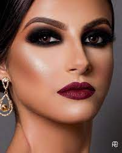

maquiagem
historia da maquiagem

A Maquiagem surgiu no Egito Antigo por volta de 3.000 a.C., onde a pintura dos olhos era feita com o objetivo de refletir sua alma através dos olhos. Essas pinturas eram feitas com o Kohl, um pigmento preto usado como sombra para sublinhar o contorno dos olhos e das sobrancelhas..
O primeiro registro conhecido de uso de maquiagem vem da 1ª Dinastia (3100-2907 a.C.) do Egito. Frascos de unguento foram encontrados em tumbas desse período e eram perfumados. O unguento era uma substância usada por homens e mulheres para ajudar a hidratar a pele e evitar rugas.